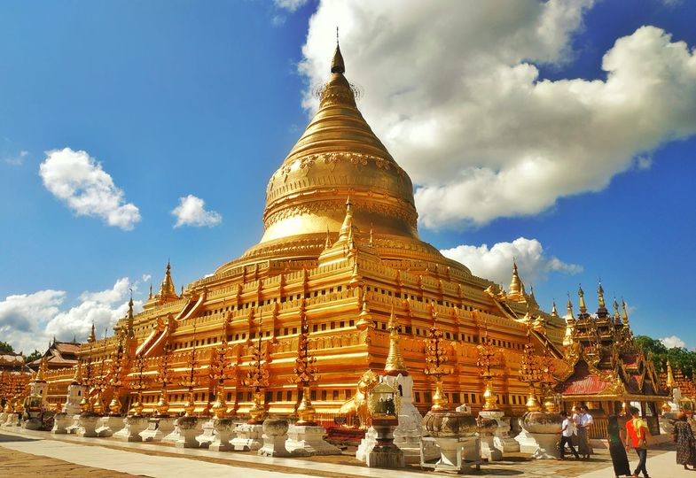

Bagan
Bagan (Burmese: ပုဂံ; MLCTS: pu.gam, IPA: [bəɡàɰ̃]; formerly Pagan) is an ancient city and a UNESCO World Heritage Site in the Mandalay Region of Myanmar.[1] From the 9th to 13th centuries, the city was the capital
of the Bagan Kingdom, the first kingdom that unified the regions that would later constitute Myanmar. During the kingdom's height between the 11th and 13th centuries, more than 10,000 Buddhist temples, pagodas and monasteries were constructed
in the Bagan plains alone,[2] of which the remains of over 2200 temples and pagodas survive. Bagan is the present-day standard Burmese pronunciation of the Burmese word Pugan (ပုဂံ), derived from Old Burmese Pukam (ပုကမ်). Its classical
Pali name is Arimaddanapura (အရိမဒ္ဒနာပူရ, lit. "the City that Tramples on Enemies"). Its other names in Pali are in reference to its extreme dry zone climate: Tattadesa (တတ္တဒေသ, "parched land"), and Tampadīpa (တမ္ပဒီပ, "bronzed country").[4]
The Burmese chronicles also report other classical names of Thiri Pyissaya (သီရိပစ္စယာ; Pali: Siripaccaya) and Tampawaddy (တမ္ပဝတီ; Pali: Tampavatī).According to the Burmese chronicles, Bagan was founded in the second century AD, and fortified
in 849 AD by King Pyinbya, 34th successor of the founder of early Bagan.[6] Mainstream scholarship however holds that Bagan was founded in the mid-to-late 9th century by the Mranma (Burmans), who had recently entered the Irrawaddy valley
from the Nanzhao Kingdom. It was among several competing Pyu city-states until the late 10th century when the Burman settlement grew in authority and grandeur.
Location
The Bagan Archaeological Zone, defined as the 13 by 8 kilometres (8.1mi ×5.0mi) area centred around Old Bagan, consisting of Nyaung U in the north and New Bagan in the south,[17] lies in the vast expanse of
plains in Upper Burma on the bend of the Irrawaddy river. It is located 290 kilometres (180mi) south-west of Mandalay and 700 kilometres (430mi) north of Yangon.
History
According to the Burmese chronicles, Bagan was founded in the second century AD, and fortified in 849 AD by King Pyinbya, 34th successor of the founder of early Bagan.[6] Mainstream scholarship however holds
that Bagan was founded in the mid-to-late 9th century by the Mranma (Burmans), who had recently entered the Irrawaddy valley from the Nanzhao Kingdom. It was among several competing Pyu city-states until the late 10th century when
the Burman settlement grew in authority and grandeur.From 1044 to 1287, Bagan was the capital as well as the political, economic and cultural nerve center of the Bagan Empire. Over the course of 250 years, Bagan's rulers and their
wealthy subjects constructed over 10,000 religious monuments (approximately 1000 stupas, 10,000 small temples and 3000 monasteries)[2] in an area of 104 square kilometres (40 sq mi) in the Bagan plains. The prosperous city grew in
size and grandeur, and became a cosmopolitan center for religious and secular studies, specializing in Pali scholarship in grammar and philosophical-psychological (abhidhamma) studies as well as works in a variety of languages on prosody,
phonology, grammar, astrology, alchemy, medicine, and legal studies.[8] The city attracted monks and students from as far as India, Sri Lanka and the Khmer Empire.
Famous Pagodas
From 1044 to 1287, Bagan was the capital as well as the political, economic and cultural nerve center of the Bagan Empire. Over the course of 250 years, Bagan's rulers and their wealthy subjects constructed over
10,000 religious monuments (approximately 1000 stupas, 10,000 small temples and 3000 monasteries)[2] in an area of 104 square kilometres (40 sq mi) in the Bagan plains. The prosperous city grew in size and grandeur, and became a cosmopolitan
center for religious and secular studies, specializing in Pali scholarship in grammar and philosophical-psychological (abhidhamma) studies as well as works in a variety of languages on prosody, phonology, grammar, astrology, alchemy, medicine,
and legal studies.[8] The city attracted monks and students from as far as India, Sri Lanka and the Khmer Empire. The culture of Bagan was dominated by religion. The religion of Bagan was fluid, syncretic and by later standards, unorthodox.
It was largely a continuation of religious trends in the Pyu era where Theravada Buddhism co-existed with Mahayana Buddhism, Tantric Buddhism, various Hindu (Saivite, and Vaishana) schools as well as native animist (nat) traditions. While
the royal patronage of Theravada Buddhism since the mid-11th century had enabled the Buddhist school to gradually gain primacy, other traditions continued to thrive throughout the Pagan period to degrees later unseen.[8] The Pagan Empire
collapsed in 1287 due to repeated Mongol invasions (1277–1301). Recent research shows that Mongol armies may not have reached Bagan itself, and that even if they did, the damage they inflicted was probably minimal.[9] However, the damage
had already been done. The city, once home to some 50,000 to 200,000 people, had been reduced to a small town, never to regain its preeminence. The city formally ceased to be the capital of Burma in December 1297 when the Myinsaing Kingdom
became the new power in Upper Burma.
Htilominlo Temple
Htilominlo Temple (Burmese: ထီးလိုမင်းလိုဘုရား, pronounced [tʰílòmɪ́ɰ̃lò pʰəjá]) is a Buddhist temple located in Bagan (formerly Pagan), in Burma/Myanmar, built during the reign of King Htilominlo (also known
as Nandaungmya), 1211–1231.[1]: 183 [2] The temple is three stories tall, with a height of 46 metres (151 ft), and built with red brick.[2] It is also known for its elaborate plaster moldings. On the first floor of the temple, there
are four Buddha statues that face each direction. The temple was damaged in the 1975 earthquake and subsequently repaired.Htilominlo was born to King Sithu II and his queen Saw Mya Kan. Chronicles do not agree on the birth, death and
reign dates. According to the Zatadawbon Yazawin chronicle, considered the most accurate chronicle for the Pagan period, he was born on 4 February 1175.His reign was largely peaceful, except for one rebellion north of Tagaung, which
was put down by his commander in chief.Still he never really governed, and was especially oblivious to the growing problem of reduced tax base brought about continuous growth of tax free religious holdings. To be sure, his predecessors
did not face the problem, and his successors also continued to ignore the problem, where by the 1280s, two-thirds of Upper Burma's cultivable land had been alienated to the religion.
Dhammayangyi Temple
Dhammayangyi Temple(Burmese: ဓမ္မရံကြီးဘုရား, pronounced [dəma̰jàɰ̃dʑí pʰəjá]) is a Buddhist temple located in Bagan, Myanmar. Largest of all the temples in Bagan, the Dhammayan as it is popularly known was
built during the reign of King Narathu[1]: 167 (1167-1170). Narathu, who came to the throne by assassinating his father Alaungsithu and his elder brother, presumably built this largest temple to atone for his sins.[2] The Dhammayangyi
is the widest temple in Bagan, and is built in a plan similar to that of Ananda Temple.[3] Burmese chronicles state that while the construction of the temple was in the process, the king was assassinated by some Indians and thus the
temple was not completed. Sinhalese sources however indicate that the king was killed by Sinhalese invaders. The temple's interior is bricked up for unknown reasons, thus only the four porches and the outer corridors are accessible.The
remarkable feature of this temple is the excellent technique of brick-laying. Although only mud mortar was used, the massive structure has survived several earthquakes of the past centuries due to its best brick-laying method. Bricks
were laid so close and neat that they looked as if they were just one piece.
Shwezigon Pagoda

The Shwezigon Pagoda or Shwezigon Paya (ရွှေစည်းခုံဘုရား [ɕwèzíɡòʊɰ̃ pʰəjá]) is a Buddhist stupa located in Nyaung-U, Myanmar. A prototype of Burmese stupas, it consists of a circular gold leaf-gilded stupa
surrounded by smaller temples and shrines. Construction of the Shwezigon Pagoda began during the reign of King Anawrahta (r. 1044–1077), the founder of the Pagan Empire, in 1059–1060 and was completed in 1102, during the reign of his
son King Kyansittha. Over the centuries the pagoda had been damaged by many earthquakes and other natural calamities, and has been refurbished several times. In recent renovations it has been covered by more than 30,000 copper plates.
However, the lowest level terraces have remained as they were. This pagoda, a sacred Buddhist religious place, is believed to enshrine a bone and tooth of Gautama Buddha. The pagoda is in the form of a cone formed by five square terraces
with a central solid core. There are footprints below the four standing Buddha statues here. Jataka legends are depicted on glazed terra-cotta tiles set into three rectangular terraces. At the entrance of the pagoda there are large
statues of guardians of the temple.Within the compound of the Shwezigon Pagoda there is a stone pillar containing Mon language inscriptions dedicated by Kyansittha.
Lemyethna Temple
Lemyethna temple was built in 1222 or 1223 in Bagan, near the village of Min Nanthu.[1] Archaeological evidence suggests that the temple was built on top of a foundation erected by the Pyu civilization,[2][3]
which had ruled Bagan before the formation of the Pagan Empire. The temple was sponsored by Ananda Thuriya,[4] a minister of King Htilominlo, who was himself a prolific builder of temples.[5] The building was one of the last temples
built by the Pagan dynasty of Myanmar, which went into decline after Htilominlo's death.[5] At the time of the temple's dedication, it housed a number of Buddhist relics and contained murals depicting Buddhist scenes. Ananda Thuriya
also inscribed prayers on the temple. The structure is a single story tall, and is surrounded by four porches. The temple also has a large central stupa.[1] The temple's condition decline over the centuries, and frequent whitewashing
of the temple damaged some of the original murals. The government of Myanmar repaired parts of the temple in 1961, and the temple remains in regular use.
Thatbyinnyu Temple
The Thatbyinnyu Temple (Burmese: သဗ္ဗညု ဘုရား, [θaʔ bjɪ̀ɰ̃ ɲ̥ṵ pʰəjá]; Pali: Sabbannu or "the Omniscient") is a Theravadin Buddhist temple in Bagan (Pagan), Myanmar. The temple is recognized as a monument
in the Bagan Archeological Area, a UNESCO World Heritage Site. Completed in 1150–51 during the reign of King Sithu I, the temple reflected the Bagan period's "innovative architectural and artistic creativity" and "an expression of
the self-confident Burmese spirit of nationhood."[note 1] At the pinnacle height of 66 m (217 ft), the five-story Thatbyinnyu is known as the tallest temple in Bagan, alongside the tallest stupa in Bagan, the 100 m (328 ft) Shwesandaw.
The temple was badly damaged by the earthquakes of 1975 and 2016. It is undergoing restoration work with Chinese technical and financial assistance; the restoration work is expected to last until about 2028.Just inside the southeastern
corner of the old city wall, the Thatbyinnyu Temple was founded by King Sithu I of Bagan Dynasty in 1144/45.[1][2] According to the royal chronicles, it was the king's second major temple construction after the Shwegugyi Temple,[1][3]
and the king is said to have donated "boatloads of rubies" to both temples.[4]
Sulamani Temple
The Sulamani Temple (Burmese: စူဠာမဏိဘုရား, pronounced [sùlàmənḭ pʰəjá]) is a Buddhist temple located in the village of Minnanthu (southwest of Bagan) in Myanmar. The temple is one of the most-frequently visited
in Bagan. It was built in 1183 by King Narapatisithu,[1]: 178 and is similar to the Thatbyinnyu Temple in design. The Sulamani Temple also shows influence from the Dhammayangyi Temple, and was the model for the Htilominlo Temple.
Sulamani Temple was restored after the 1975 earthquake, and utilises brick and stone, with frescoes in the interior of the temple. It was rebuilt in 1994. The Zamani Project from the University of Cape Town, South Africa, offered its
services towards the spatial documentation of monuments in Bagan in response to the destruction of monuments by an earthquake in August 2016. After reconnaissance visit to Bagan and a subsequent meeting at the UNESCO offices in Bangkok
in February 2017, the Zamani Project documented the Sula-mani-gu-hpaya (Sulamani) Temple, during a field campaign in March 2017. During another 2 field campaigns between 2017–2018, the Zamani Project spatially documented further 11
monuments in Bagan, including Kyauk-ku-umin (154); Kubyauk-gyi (Gubyaukgyi) (298).
Famous Places